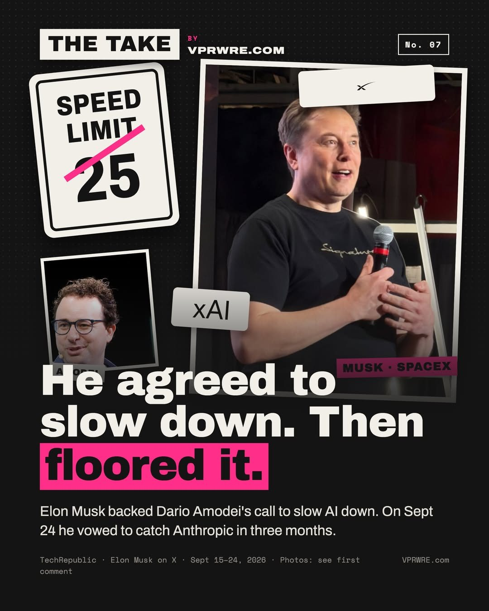

The AI race
He agreed to slow down. Then floored it.
Elon Musk agreed AI should slow down. Then he promised to win the race by spring.

On Sept 12, Anthropic CEO Dario Amodei asked AI labs to slow how fast their models gain capability. Musk replied on X: “Dario is right.” Sam Altman agreed too, four months after Musk lost his lawsuit against him.
On Sept 24, Musk posted that SpaceX will have a Fable- or GPT-6-level model within two to three months, and “pole position” in about six. He’s reportedly moving a few dozen engineers off Starlink and Starship to AI. SpaceX merged with xAI in February, listed in June and bought Cursor for $60 billion.
He’s done this before. In March 2023 he signed the open letter asking labs to pause for six months. In July 2023 he launched xAI.
In fairness: agreeing a risk is real isn’t a promise to stop. And Musk’s deadlines slip.
Our take: agree in public, race in private. A speed limit freezes whoever’s ahead.
Everyone wants a speed limit. For the car ahead.
Which Musk deadline do you still believe?
Background
Amodei made his case in an essay titled “We Must Pace the Frontier,” a three-part plan to slow how quickly the most capable AI systems advance. The first step, which Anthropic said it would take on its own, gives independent evaluators access to check a lab’s safety practices and report incidents. The other two steps depend on coordination across the industry and with governments. Altman said OpenAI would also give evaluators “employee-like access.” Musk’s two-word reply made no commitment of that kind.
SpaceX absorbed xAI, the developer of Grok, in February and went public on June 12 in a $75 billion offering. Days later it agreed to acquire Anysphere, the company behind Cursor, for $60 billion in stock, with the deal expected to close in the third quarter. In late June, Business Insider reported, citing Musk’s posts, that a few dozen senior Starlink and Starship engineers had been moved to work on Grok. In his Sept. 24 post, Musk said SpaceX’s AI effort was three years old, compared with six years for Anthropic and 10 for OpenAI.
Musk was one of more than 1,100 people who signed a March 2023 open letter calling for a six-month pause on training systems more powerful than GPT-4. In May, a jury rejected his lawsuit against OpenAI and Altman, finding it had been filed too late.
Sources
- Musk and ChatGPT CEO back calls to ‘slow down’ development of AI ITV News
- Musk Says SpaceX Will Take AI ‘Pole Position’ in Six Months If Growth Holds TeslaNorth
- SpaceX to acquire Cursor for $60B in stock days after blockbuster IPO TechCrunch
- Elon Musk Deploys SpaceX Engineers To Grok Development Let’s Data Science
- Elon Musk loses US lawsuit against OpenAI Al Jazeera
- Elon Musk, Apple’s Steve Wozniak and over 1,100 sign open letter calling for 6-month ban on creating powerful AI Fortune
The carousel
12 slides · Open on Instagram
Disclosure: we draft with Claude, which Anthropic makes.